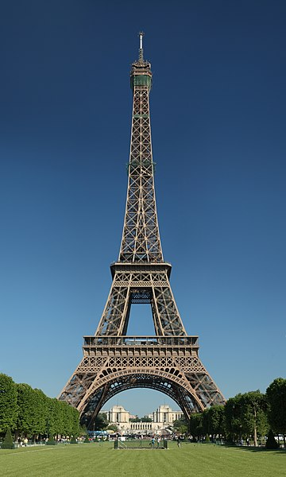

Э́йфелева ба́шня - металлическая башня в центре Парижа, самая узнаваемая его архитектурная достопримечательность. Названа в честь главного конструктора Гюстава Эйфеля; сам Эйфель называл её просто «300-метровая башня» (tour de 300 mètres).
Башня, впоследствии ставшая символом Парижа, была построена в 1889 году и первоначально задумывалась как временное сооружение, служившее входной аркой парижской Всемирной выставки 1889 года.
Эйфелеву башню называют самой посещаемой платной и самой фотографируемой достопримечательностью мира.